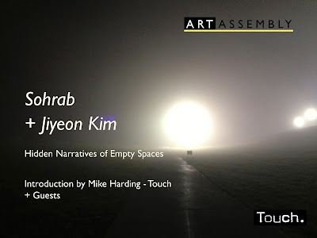
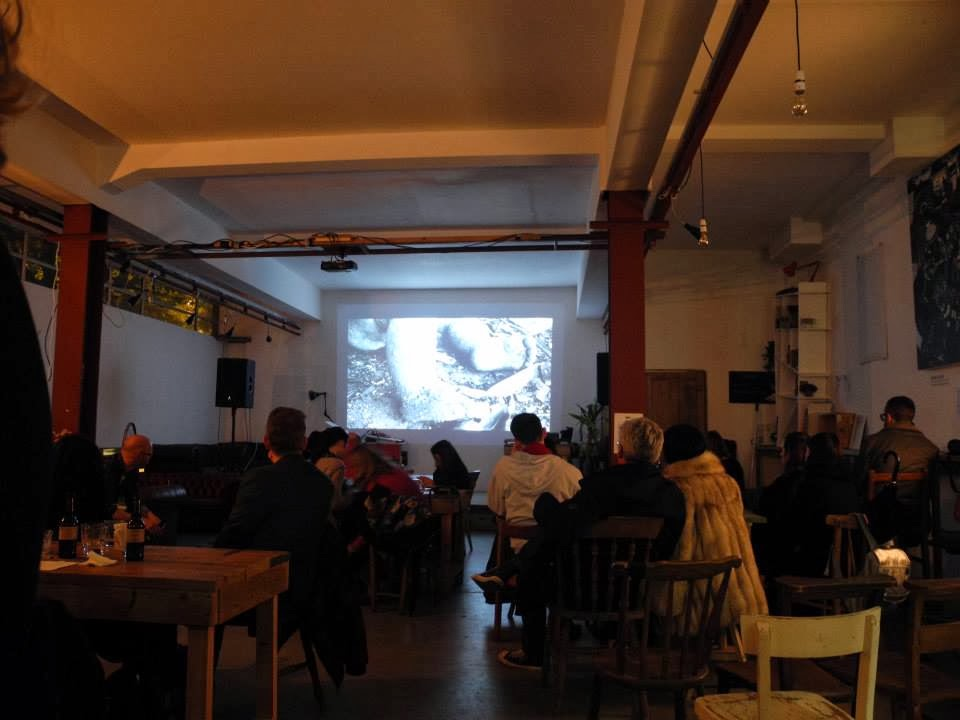
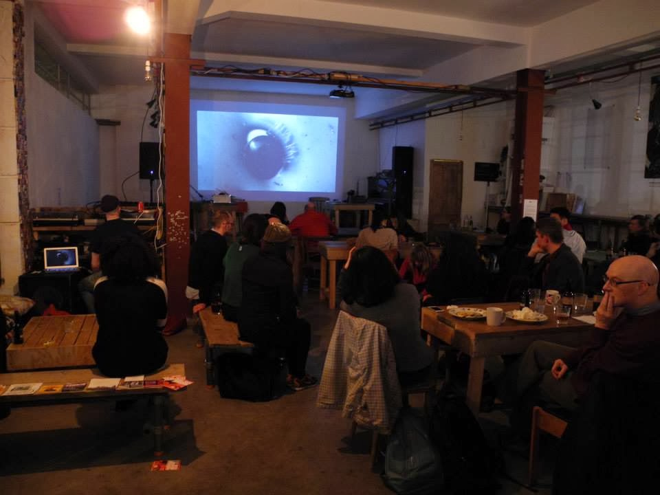

hidden narratives of empty spaces
the peckham pelican, london — 09.11.2013
Art Assembly in association with Touch presented Hidden Narratives of Empty Spaces – an investigation into the stories and soundtracks hidden within the cracks of empty rooms and deserted environments. Iranian born Sohrab and Seoul based artist Jiyeon Kim demonstrated through their work how manipulated field recordings can be employed to amplify an existing or reveal a new narrative of the empty space.
With guest performances and an opening conversation by Mike Harding of Touch. 7pm, Saturday 9th November, at The Peckham Pelican.
Support slots announced for Hidden Narratives of Empty Spaces including Performance and Sonic Artist Leslie Deere, Nicolas Freeman, Fari Bradley and a screening from Tiago Esteves.
Event Info
The Peckham Pelican, London
Saturday, 9th November 2013 (7 pm)
Documentation


